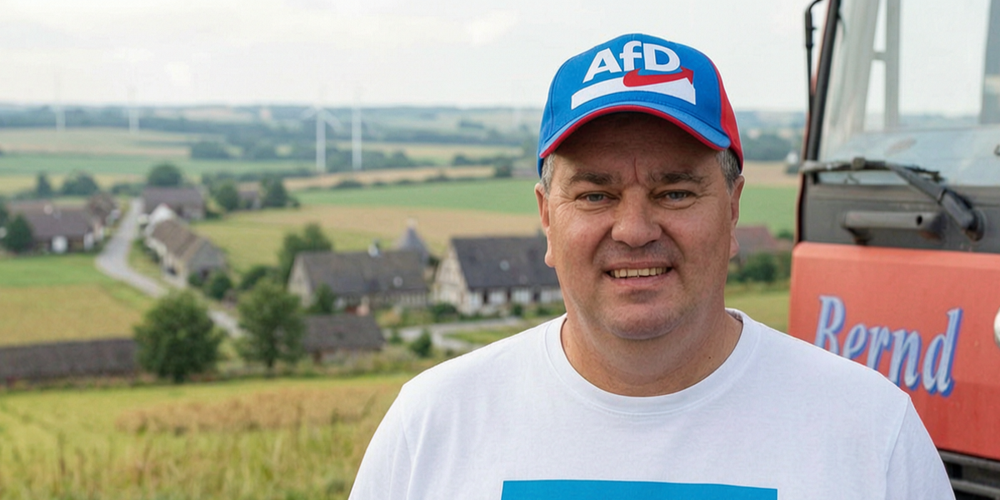

Zehntausend gegen die Brandmauer

Zehntausend Euro. Nicht an die eigene Partei, sondern an die AfD.
Überwiesen hat sie Bernd Prange, CDU-Ortsbürgermeister der Gemeinde Altmärkische Höhe in Sachsen-Anhalt. Nach seinen Angaben gingen zwei Zahlungen zu je 5.000 Euro an den AfD-Landesverband. Ein Sprecher der AfD Sachsen-Anhalt bestätigte die beiden Spenden dem MDR.
Bei der Landtagswahl am 6. September will Prange selbst AfD wählen. Er will mehr als ein Kreuz auf dem Stimmzettel: Prange wünscht sich eine absolute Mehrheit der AfD. Dann, so seine Hoffnung, solle die CDU „aufwachen“, die Brandmauer fallen lassen und sich von ihrem angeblichen Linkskurs lösen.
Das ist kein stiller Parteiaustritt. Prange sagt offen, er wolle, dass die CDU ihn hinauswirft.
Die Reaktion fällt entsprechend aus. Der CDU-Landesverband nennt die Spende einen möglichen „sehr schwerwiegenden parteirechtlichen Vorgang“. Der Kreisvorstand in Stendal soll über ein Parteiausschlussverfahren beraten.
Prange sitzt seit Jahrzehnten für die CDU im Kreistag und ist seit mehr als drei Jahrzehnten Ortsbürgermeister. Gerade deshalb ist der Vorgang mehr als ein lokaler Wutanfall. Ein CDU-Kommunalpolitiker finanziert die Partei, die seine eigene Führung um jeden Preis auf Abstand hält – und macht daraus einen öffentlichen Machtkampf.
Die Brandmauer steht noch. Aber sie bekommt den Druck inzwischen aus den eigenen Reihen.
Mehr dazu: Nicht Protest. Kompetenz.